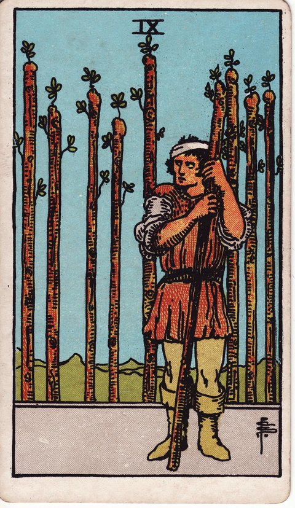

완드 · 타로 카드 백과사전
완드 9

정방향
키워드: 끈질긴 인내 · 마지막 고비 · 지친 몸의 저력 · 눈앞의 결승선 · 짜내는 마지막 힘 · 포기 직전의 저력
조언: 지쳤더라도 마지막 한 걸음만 더 버티면 결실을 볼 수 있습니다.
연애운
솔로
지쳐도 조금만 더 버티면 관계에서 좋은 결과를 볼 수 있는 시기입니다. 여러 번의 실패에도 포기하지 않는 태도가 결국 좋은 인연을 만듭니다.
커플
여러 어려움을 함께 견뎌온 관계가 결실을 앞두고 있는 시기입니다. 지금의 고비만 넘기면 더 단단한 사이가 될 수 있어요.
재물운
소비
절약을 지속해온 노력이 곧 결실을 맺는 시기입니다. 조금만 더 버티면 목표한 금액에 도달할 수 있어요.
투자
힘든 상황에서도 조금만 더 버티면 결실을 볼 수 있는 시기입니다. 지금까지 견뎌온 만큼 곧 회복의 신호가 나타날 수 있어요.
취업운
구직
여러 번의 도전 끝에 마지막 기회가 다가오는 시기입니다. 지쳤더라도 이번 기회만큼은 놓치지 않도록 힘을 내보세요.
이직
이직이나 부서 이동을 준비하며 지칠 대로 지쳤지만 결과를 눈앞에 둔 시기입니다. 마지막 면접이나 협상 단계까지 힘을 아끼지 말고 끝까지 밀어붙여 보세요.
직장운
팀워크
팀이 힘든 프로젝트의 막바지를 버텨내고 있는 시기입니다. 조금만 더 힘을 모으면 좋은 결과로 마무리할 수 있어요.
개인성과
맡은 업무가 마무리 단계에 접어들며 피로가 절정에 달하는 시기입니다. 지금 완성도를 놓치면 그동안의 고생이 흐려질 수 있으니 마지막 점검까지 긴장을 늦추지 마세요.
사업운
창업준비
초기 자금난과 시행착오를 버텨온 창업이 드디어 손익분기점을 눈앞에 두고 있는 시기입니다. 마지막 한 달만 더 허리띠를 졸라매면 안정적인 궤도에 오를 수 있어요.
운영중
여러 어려움을 견뎌온 사업이 안정을 앞두고 있는 시기입니다. 마지막까지 긴장을 놓지 않는 것이 중요합니다.
학업운
시험준비
마지막 힘을 짜내면 좋은 결과를 얻을 수 있는 시기입니다. 시험이 얼마 남지 않았다면 끝까지 집중력을 유지하세요.
진로고민
여러 시도 끝에 원하는 길을 찾기 직전의 시기입니다. 포기하지 않고 계속한 노력이 곧 방향을 찾아줄 수 있어요.
건강운
신체
조금만 더 버티면 회복의 결실을 볼 수 있는 시기입니다. 꾸준한 관리가 곧 눈에 보이는 변화로 나타날 수 있어요.
정신
여러 어려움을 견뎌온 마음이 회복을 앞두고 있는 시기입니다. 지금까지 버텨온 자신을 스스로 인정해주세요.
대인관계운
새로운 인연
여러 시도 끝에 좋은 인연을 만날 결실을 앞둔 시기입니다. 지금까지의 노력이 헛되지 않았다는 것을 곧 확인하게 될 수 있어요.
기존 관계
오래된 친구나 동료와의 우정이 여러 고비를 지나 더 단단해지는 시기입니다. 함께 견뎌온 시간을 인정하며 감사를 표현해보면 관계가 한층 깊어집니다.
명예운
마지막 힘을 짜내면 인정받을 수 있는 시기입니다. 지금까지의 끈기가 곧 좋은 평가로 이어질 수 있어요.
이사운
조금만 더 버티면 원하는 이동을 이룰 수 있는 시기입니다. 여러 절차에 지쳤더라도 마지막까지 힘을 내보세요.
자식운
힘들어도 조금만 더 버티면 아이와의 관계가 나아질 시기입니다. 지금의 노력이 곧 아이와의 신뢰로 돌아올 수 있어요.
역방향
키워드: 방어적 태도 · 탈진 · 고립된 버팀 · 닫힌 마음의 문 · 혼자만의 사투 · 지원 거부
조언: 혼자 다 짊어지려 하지 말고 주변에 도움을 청해보세요.
연애운
솔로
연애에서 반복된 실망 때문에 마음을 활짝 열지 못하고 있는 시기입니다. 예전 상대에게 받은 상처를 지금 만나는 사람에게 투영하지 않도록 주의하세요.
커플
지친 마음에 관계를 지키려는 의지가 약해지고 있을 수 있습니다. 혼자 버티기보다 상대에게 솔직하게 힘든 마음을 털어놓아보세요.
재물운
소비
지친 마음에 재정 관리를 포기하고 싶어질 수 있습니다. 완벽하지 않아도 지금까지의 절약 습관을 놓지 마세요.
투자
회복을 기다리다 지쳐 방어적으로 자산을 움츠리고 있을 수 있습니다. 혼자 판단하기보다 전문가의 의견을 들어보는 것도 방법입니다.
취업운
구직
계속되는 탈락에 방어적인 태도로 지쳐가며 포기 직전에 몰려 있을 수 있습니다. 혼자 준비하기보다 주변에 도움을 청해보세요.
이직
방어적인 태도로 지쳐가며 포기 직전에 몰려 있을 수 있습니다. 지금 그만두면 그동안의 노력이 아까우니 잠시 쉬어가며 재정비하세요.
직장운
팀워크
팀 전체가 지쳐 방어적인 분위기에 빠져 있을 수 있습니다. 서로 짐을 나누며 함께 버텨나가는 태도가 필요합니다.
개인성과
업무 부담이 쌓이며 방어적으로 움츠러들어 한계에 다다르고 있을 수 있습니다. 혼자 다 짊어지려 하지 말고 상사나 동료에게 도움을 청하세요.
사업운
창업준비
밤낮없이 매달려온 창업 운영에 지쳐 모든 걸 그만두고 싶어질 수 있습니다. 혼자 끌어안지 말고 공동창업자나 멘토에게 상황을 솔직히 털어놓아보세요.
운영중
방어적인 태도로 새로운 시도를 꺼리게 되고 있을 수 있습니다. 지쳤다는 신호가 있다면 잠시 휴식을 취하고 재정비하세요.
학업운
시험준비
지친 마음에 포기하고 싶은 유혹이 클 수 있습니다. 혼자 버티기 힘들다면 선생님이나 친구에게 도움을 청해보세요.
진로고민
여러 실패에 지쳐 새로운 시도를 꺼리게 되고 있을 수 있습니다. 방어적으로 움츠러들기보다 작은 시도부터 다시 해보세요.
건강운
신체
지친 몸과 마음이 한계에 다다르고 있을 수 있습니다. 억지로 버티기보다 충분한 휴식을 먼저 취하세요.
정신
방어적인 태도로 마음의 문을 닫고 있을 수 있습니다. 혼자 견디려 하지 말고 주변에 도움을 청하는 것이 필요합니다.
대인관계운
새로운 인연
새로운 사람을 사귀는 것 자체가 피곤하게 느껴져 거리를 두게 되는 시기입니다. 낯선 사람에게 곧바로 곁을 내주지 않아도 괜찮으니, 신뢰가 쌓일 때까지 천천히 관계를 이어가 보세요.
기존 관계
오래 챙겨온 인연에 마음을 다 쏟았는데 알아주지 않는 것 같아 서운함이 쌓이고 있을 수 있습니다. 서운한 마음을 삭이기만 하지 말고 있는 그대로 표현해보세요.
명예운
지친 마음에 평판 관리를 포기하고 싶어질 수 있습니다. 방어적으로 움츠러들기보다 꾸준한 모습을 계속 보여주세요.
이사운
지친 마음에 이동 계획을 포기하고 싶어질 수 있습니다. 혼자 알아보기 힘들다면 주변의 도움을 받아보세요.
자식운
지친 마음에 아이를 대하기 버거워질 수 있습니다. 혼자 감당하려 하지 말고 가족이나 주변에 도움을 요청해보세요.
같은 슈트: 완드 에이스 · 완드 2 · 완드 3 · 완드 4 · 완드 5 · 완드 6 · 완드 7 · 완드 8 · 완드 9 · 완드 10 · 완드 시종 · 완드 기사 · 완드 퀸 · 완드 킹
홈에서 직접 카드 뽑아보기 ↗